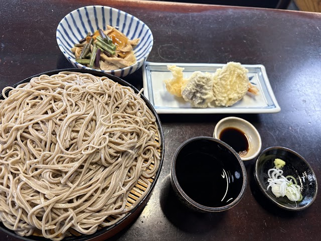
| 営業時間 | 月・火・水・木・金・土・日 9:30〜16:45 |
|---|---|
| 定休日 | なし(要最終確認) |
| 住所 | 長野県長野市長野大門町５０４ |
| 予約 | 要確認 — ☎ 026-232-2502 ／ 公式サイト |
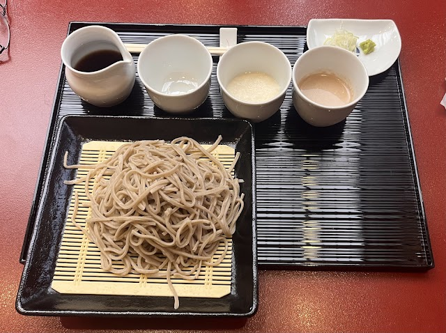
| 営業時間 | 火・水・金・土・日 11:00〜14:30 |
|---|---|
| 定休日 | 月・木曜 |
| 住所 | 長野県長野市長野大門町６７ |
| 予約 | 要確認 — ☎ 026-232-2531 ／ 公式サイト |
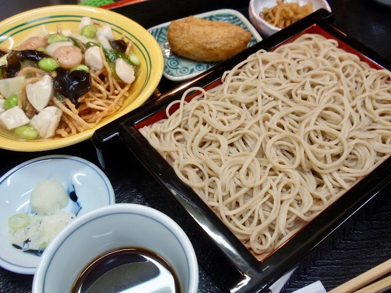
| 営業時間 | 月・火・木・金・土・日 11:30〜14:30 |
|---|---|
| 定休日 | 水曜 |
| 住所 | 長野県長野市大字鶴賀権堂町権堂町２３２０ |
| 予約 | 要確認 — ☎ 026-232-3718 ／ 公式サイト |
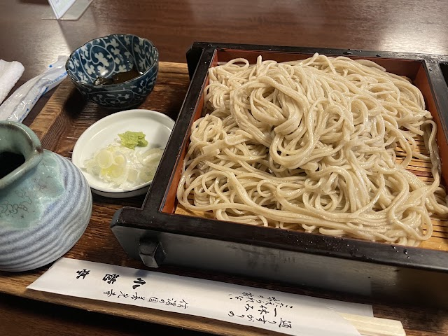
| 営業時間 | 月・火・水・木・金・土・日 11:00〜14:30 |
|---|---|
| 定休日 | なし(要最終確認) |
| 住所 | 長野県長野市長野東之門町３６７ |
| 予約 | 可 — ☎ 026-232-2439 ／ 公式サイト |
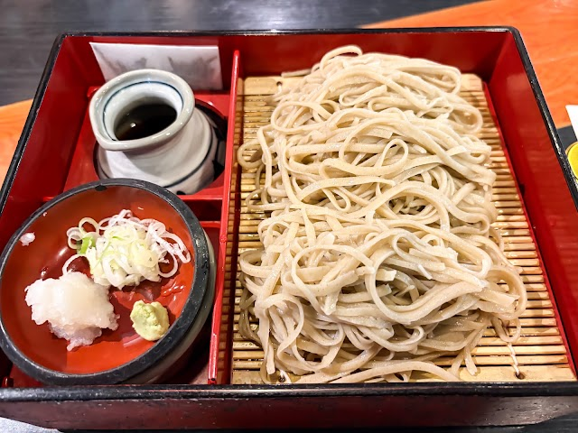
| 営業時間 | 月・水・木・金・土・日 11:00〜14:30 |
|---|---|
| 定休日 | 火曜 |
| 住所 | 長野県長野市南長野西後町１６３７−３ 今むらそば本店 |
| 予約 | 可 — ☎ 026-232-3518 ／ 公式サイト |
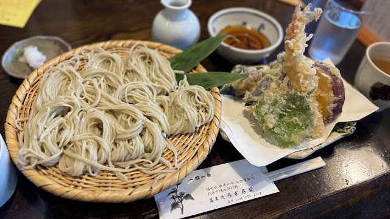
| 営業時間 | 月・木・金・土・日 10:30〜15:30 |
|---|---|
| 定休日 | 火・水曜 |
| 住所 | 長野県長野市戸隠３２２９ |
| 予約 | 要確認 — ☎ 026-254-2219 ／ 公式サイト |
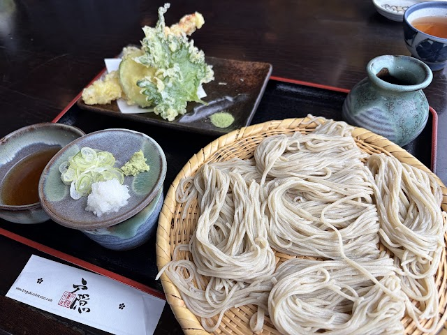
| 営業時間 | 月・水・木・金 10:30〜15:00 ／ 土・日 10:30〜15:30 |
|---|---|
| 定休日 | 火曜 |
| 住所 | 長野県長野市戸隠３４２３ |
| 予約 | 要確認 — ☎ 026-254-2351 ／ 公式サイト |
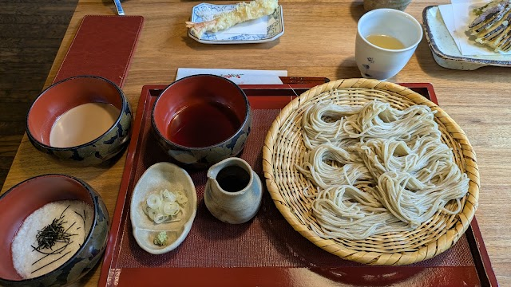
| 営業時間 | 月・火・水・土・日 10:30〜16:00 |
|---|---|
| 定休日 | 木・金曜 |
| 住所 | 長野県長野市戸隠中社3510 25 |
| 予約 | 要確認 — ☎ 026-254-2102 ／ 公式サイト |
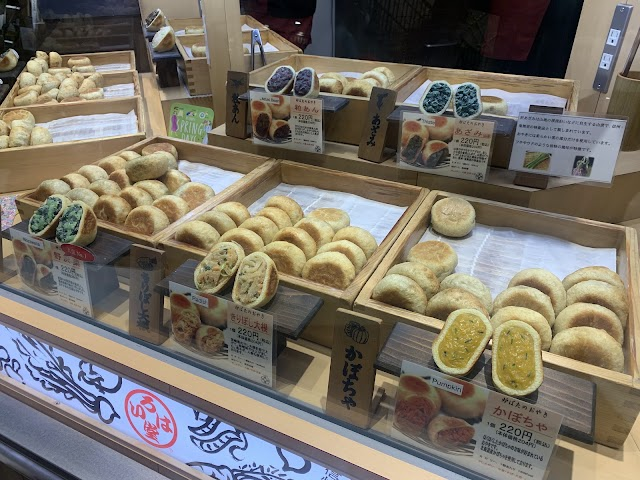
| 営業時間 | 月・火・水・木・金・土・日 8:30〜17:00 |
|---|---|
| 定休日 | なし(要最終確認) |
| 住所 | 長野県長野市鬼無里１６８７−１ |
| 予約 | 要確認 — ☎ 026-256-2033 ／ 公式サイト |
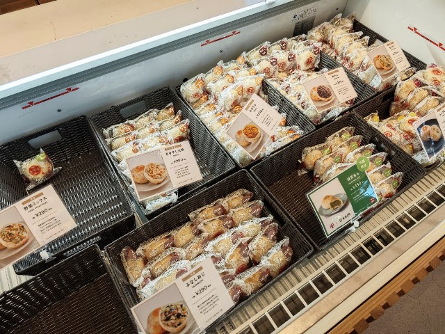
| 営業時間 | 月・火・水・木・金・土・日 9:30〜18:00 |
|---|---|
| 定休日 | なし(要最終確認) |
| 住所 | 長野県長野市篠ノ井杵淵７−１ |
| 予約 | 要確認 — ☎ 026-214-0410 ／ 公式サイト |
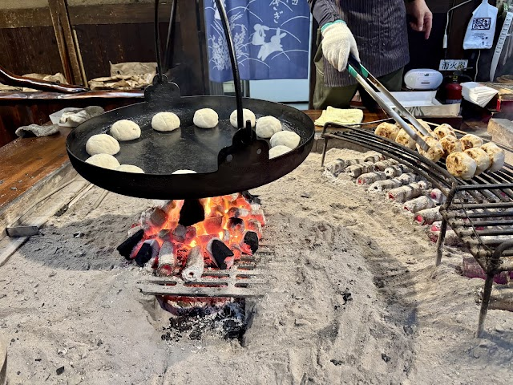
| 営業時間 | 月・火・木・金・土・日 9:00〜16:45 |
|---|---|
| 定休日 | 水曜 |
| 住所 | 長野県長野市長野大門町５３ |
| 予約 | 要確認 — ☎ 026-232-5786 ／ 公式サイト |
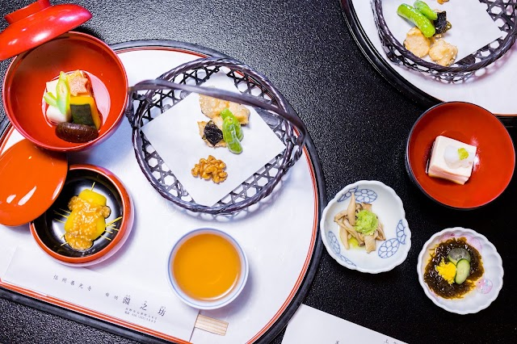
| 営業時間 | 月・火・水・木・金・土・日 24 :間営業 |
|---|---|
| 定休日 | なし(要最終確認) |
| 住所 | 長野県長野市長野元善町４６２ |
| 予約 | 要確認 — ☎ 026-232-3669 ／ 公式サイト |
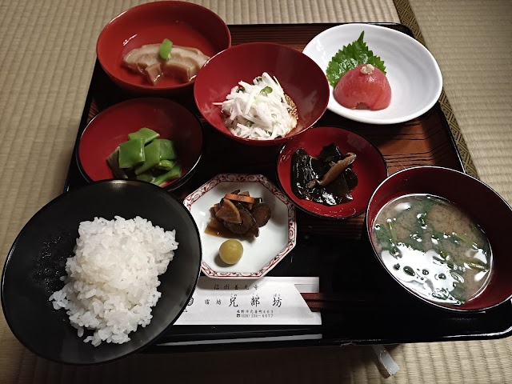
| 営業時間 | 月・火・水・木・金・土・日 10:00〜17:00 |
|---|---|
| 定休日 | なし(要最終確認) |
| 住所 | 長野県長野市長野元善町４６３ |
| 予約 | 要確認 — ☎ 026-234-6677 ／ 公式サイト |
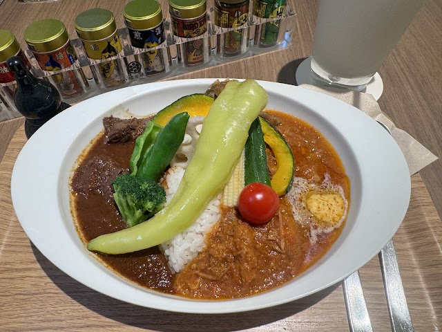
| 営業時間 | 月・火・水・木・金・土・日 10:00〜17:00 |
|---|---|
| 定休日 | なし(要最終確認) |
| 住所 | 長野県長野市長野横町８６−１ |
| 予約 | 要確認 — ☎ 026-232-8770 ／ 公式サイト |
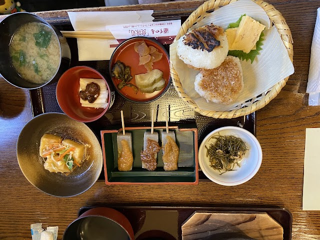
| 営業時間 | 月・火・水・木・金・土 9:00〜18:00 |
|---|---|
| 定休日 | 日曜 |
| 住所 | 長野県長野市南長野西後町６２５ |
| 予約 | 要確認 — ☎ 026-235-4022 ／ 公式サイト |
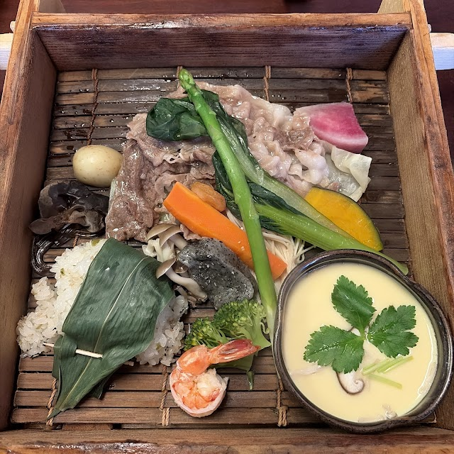
| 営業時間 | 月・水・木・金・土・日 11:30〜14:00, 17:00〜20:30 |
|---|---|
| 定休日 | 火曜 |
| 住所 | 長野県長野市長野大門町５０３ |
| 予約 | 可 — ☎ 026-232-2311 ／ 公式サイト |
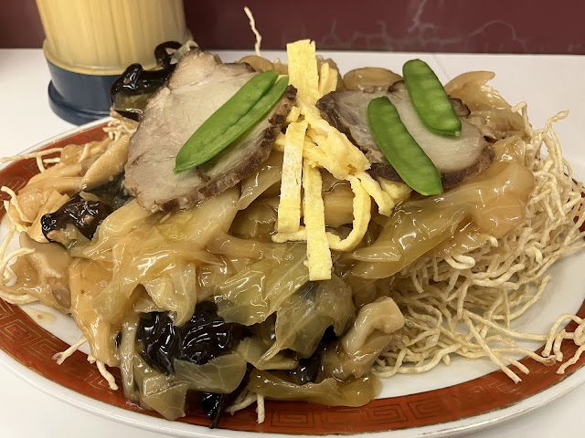
| 営業時間 | 月・火・水・金・土・日 11:00〜20:00 |
|---|---|
| 定休日 | 木曜 |
| 住所 | 長野県長野市鶴賀権堂町１３２３ |
| 予約 | 要確認 — ☎ 026-235-0344 |
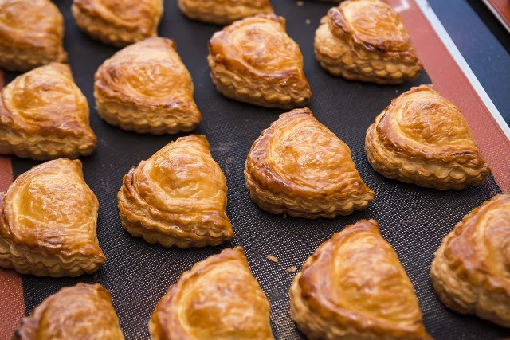
| 営業時間 | 月・火・水・木・金・土・日 9:00〜18:00 |
|---|---|
| 定休日 | なし(要最終確認) |
| 住所 | 長野県長野市長野元善町 |
| 予約 | 要確認 — ☎ 026-219-2881 ／ 公式サイト |
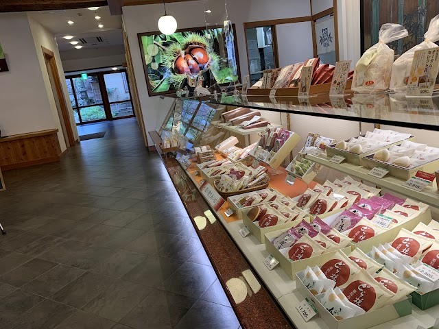
| 営業時間 | 月・火・水・木・金・土・日 8:00〜18:00 |
|---|---|
| 定休日 | なし(要最終確認) |
| 住所 | 長野県長野市長野大門町５１１ |
| 予約 | 要確認 — ☎ 026-238-1511 ／ 公式サイト |
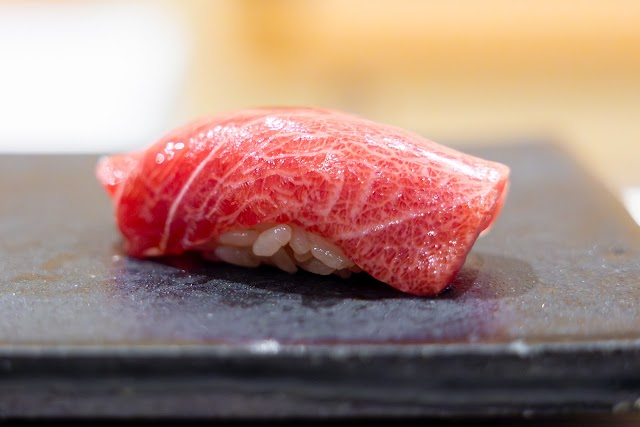
| 営業時間 | 月・火・水・木・金・土 18:00〜22:00 |
|---|---|
| 定休日 | 日曜 |
| 住所 | 長野県長野市南長野県町４７７−１５ |
| 予約 | 可 — ☎ 026-235-5565 ／ 公式サイト |
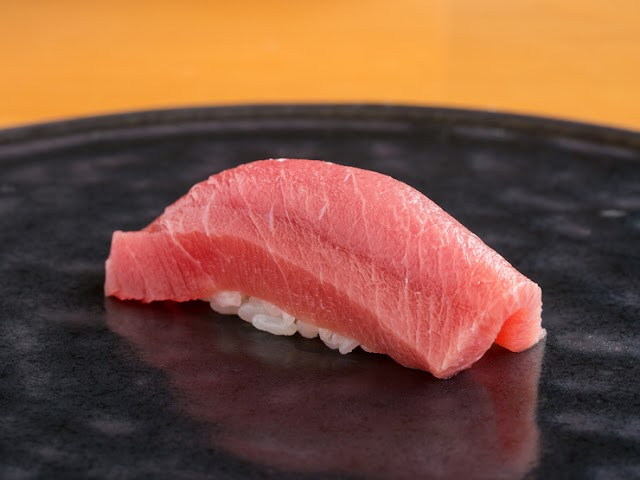
| 営業時間 | 火・水・木・金・土 18:00〜22:00 |
|---|---|
| 定休日 | 月・日曜 |
| 住所 | 長野県長野市大字南長野西後町西後町１５５８−１ ダイビシマンション 1F |
| 予約 | 可 — ☎ 026-225-9487 ／ 公式サイト |
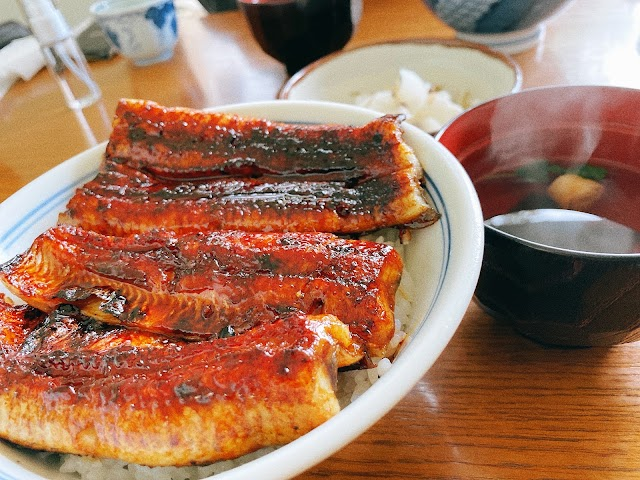
| 営業時間 | 月・金・土・日 11:00〜14:00, 16:30〜19:30 |
|---|---|
| 定休日 | 火・水・木曜 |
| 住所 | 長野県長野市松代町東条４２６２−１ |
| 予約 | 可 — ☎ 026-278-2066 ／ 公式サイト |
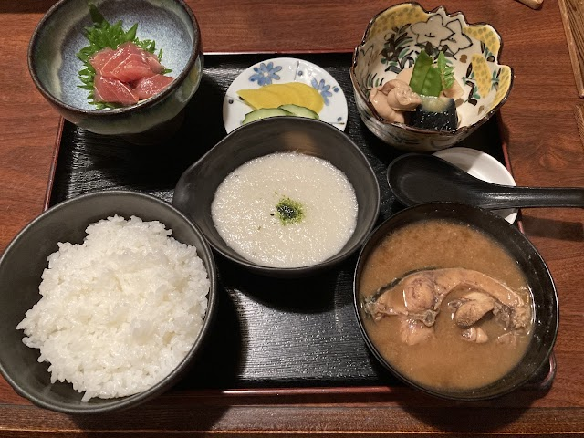
| 営業時間 | 月・火・水・木・金・土・日 11:30〜13:30, 17:30〜21:00 |
|---|---|
| 定休日 | なし(要最終確認) |
| 住所 | 長野県長野市松代町松代６２８ 割烹梅田屋 |
| 予約 | 可 — ☎ 026-278-2174 |
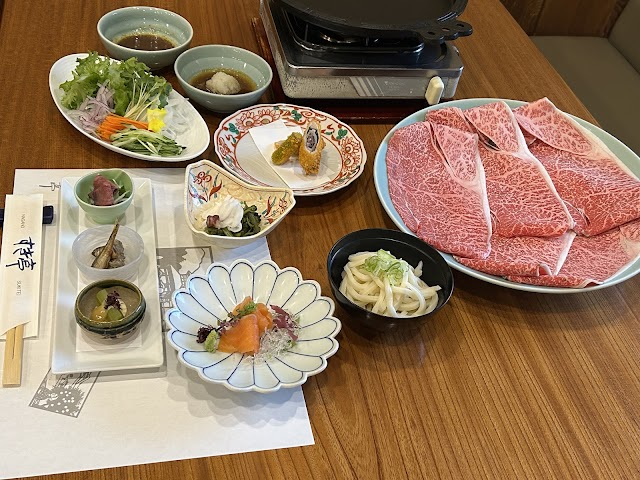
| 営業時間 | 火・水・木・金・土 11:30〜14:30, 17:00〜21:30 ／ 日 11:00〜14:30, 17:00〜21:30 |
|---|---|
| 定休日 | 月曜 |
| 住所 | 長野県長野市南長野妻科１１２−１ |
| 予約 | 可 — ☎ 026-234-1123 ／ 公式サイト |
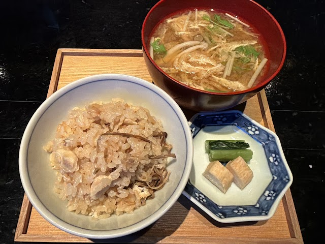
| 営業時間 | 月・火・水・木・金・土・日 11:00〜22:00 |
|---|---|
| 定休日 | なし(要最終確認) |
| 住所 | 長野県上高井郡小布施町小布施８０７ |
| 予約 | 可 — ☎ 026-247-5300 ／ 公式サイト |
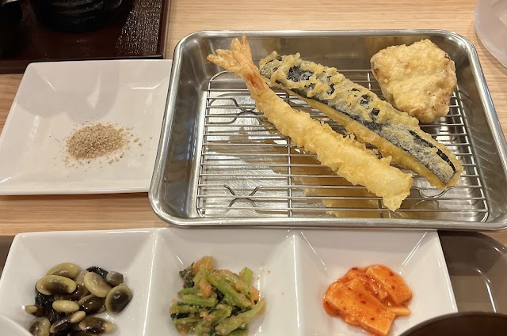
| 営業時間 | 火・水・木・金・土・日 11:30〜14:00, 17:30〜21:00 |
|---|---|
| 定休日 | 月曜 |
| 住所 | 長野県長野市鶴賀南千歳町８５７ 松屋ビル 1F-C |
| 予約 | 要確認 |
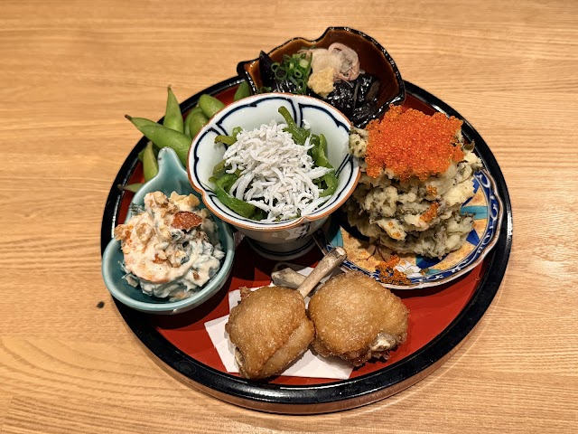
| 営業時間 | 月・火・水・木・金 17:00〜23:00 ／ 土・日 15:00〜23:00 |
|---|---|
| 定休日 | なし(要最終確認) |
| 住所 | 長野県長野市南千歳１丁目３−１０ サンちとせビル 1F |
| 予約 | 要確認 — ☎ 026-217-2615 ／ 公式サイト |
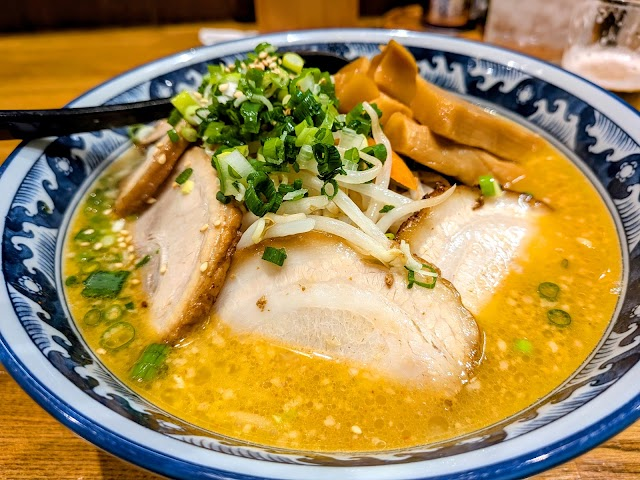
| 営業時間 | 月・火・水・木・金・土・日 11:00〜0:00 |
|---|---|
| 定休日 | なし(要最終確認) |
| 住所 | 長野県長野市南長野末広町１３６２ |
| 予約 | 要確認 — ☎ 026-224-1183 |
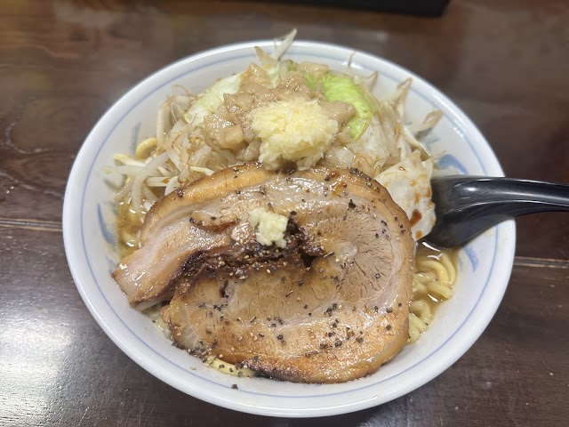
| 営業時間 | 月・火・水・金・土・日 11:00〜16:00, 17:00〜3:00 |
|---|---|
| 定休日 | 木曜 |
| 住所 | 長野県長野市栗田２０１１ |
| 予約 | 要確認 — ☎ 026-225-5060 ／ 公式サイト |
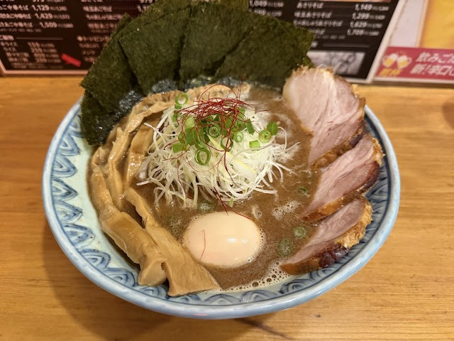
| 営業時間 | 月・水・木 11:30〜15:00, 18:00〜2:00 ／ 火 18:00〜2:00 ／ 金・土 11:30〜15:00, 18:00〜3:00 |
|---|---|
| 定休日 | 日曜 |
| 住所 | 長野県長野市南長野北石堂町１３６１ ジャシイ千石センタービル １Ｆ |
| 予約 | 要確認 — ☎ 026-264-6886 ／ 公式サイト |
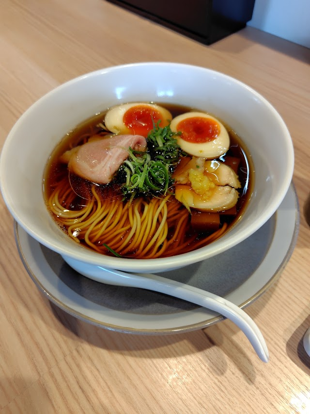
| 営業時間 | 水・木・金 10:45〜14:00, 17:30〜20:00 ／ 土・日 10:00〜15:00 |
|---|---|
| 定休日 | 月・火曜 |
| 住所 | 長野県長野市川中島町原６５７−４ |
| 予約 | 要確認 — ☎ 026-214-2985 ／ 公式サイト |
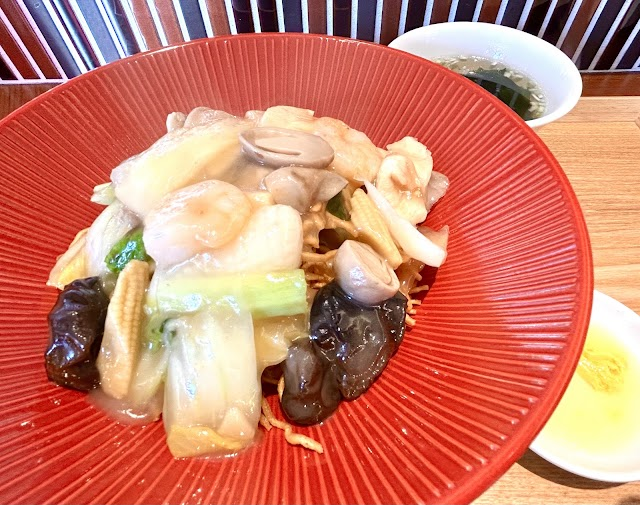
| 営業時間 | 火・水・木・金・土 11:30〜14:30 |
|---|---|
| 定休日 | 月・日曜 |
| 住所 | 長野県長野市南長野南石堂町１２７９−６ |
| 予約 | 可 — ☎ 026-217-1553 ／ 公式サイト |
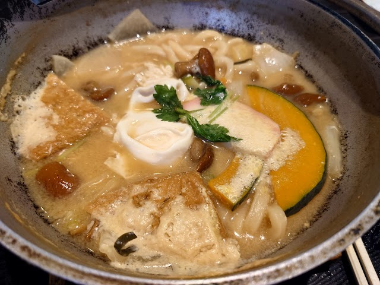
| 営業時間 | 月・火・木・金・土・日 11:30〜14:30, 17:00〜20:30 |
|---|---|
| 定休日 | 水曜 |
| 住所 | 長野県長野市松代町松代 松代町松代御安町1129−2 |
| 予約 | 要確認 — ☎ 026-274-5536 ／ 公式サイト |
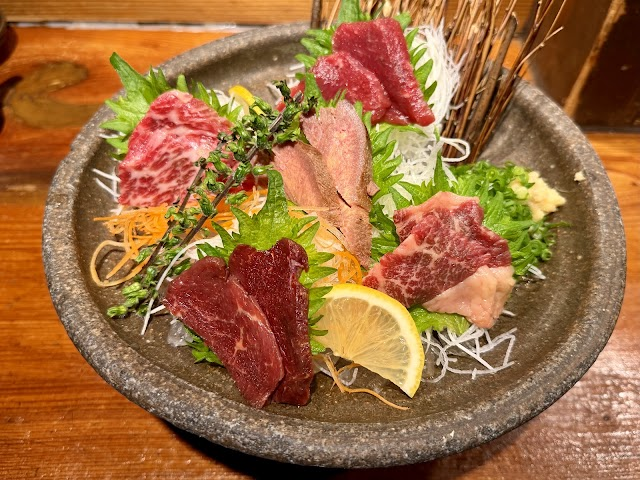
| 営業時間 | 月・火・水・木・金・土・日 17:00〜0:00 |
|---|---|
| 定休日 | なし(要最終確認) |
| 住所 | 長野県長野市南長野北石堂町１３８０ |
| 予約 | 可 — ☎ 050-1794-2899 ／ 公式サイト |
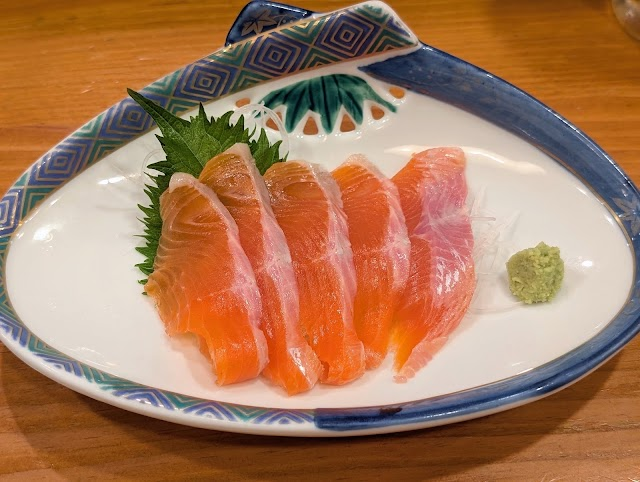
| 営業時間 | 月・火・水・木・金・土 17:00〜22:00 |
|---|---|
| 定休日 | 日曜 |
| 住所 | 長野県長野市南長野南石堂町１３６８−９ |
| 予約 | 可 — ☎ 026-223-7135 ／ 公式サイト |
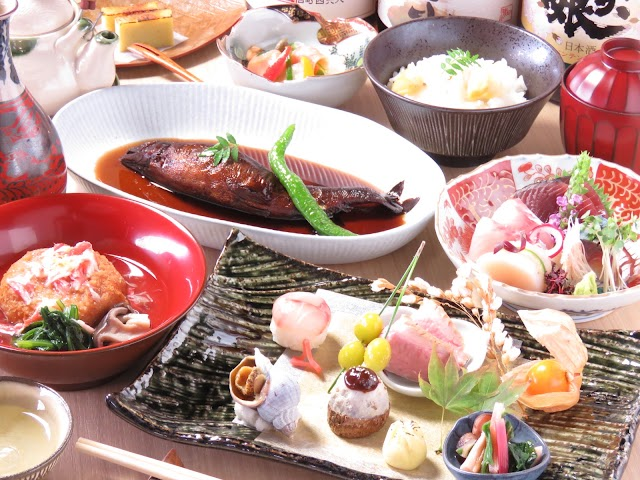
| 営業時間 | 火・水・木・金・土・日 17:00〜22:00 |
|---|---|
| 定休日 | 月曜 |
| 住所 | 長野県長野市南長野南石堂町１４２１ 三福ビル 2F |
| 予約 | 可 — ☎ 026-217-1181 ／ 公式サイト |
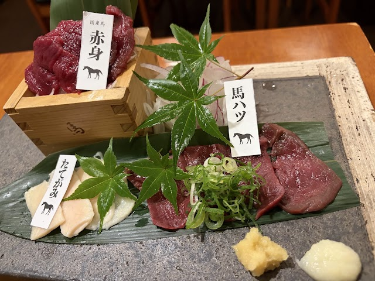
| 営業時間 | 月・火・水・木・金・土・日 17:00〜23:30 |
|---|---|
| 定休日 | なし(要最終確認) |
| 住所 | 長野県長野市南長野南石堂町１４１８−１ |
| 予約 | 可 — ☎ 026-217-2901 ／ 公式サイト |
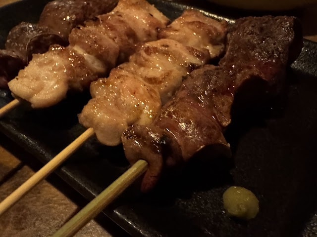
| 営業時間 | 火・水・木・金・土 17:30〜22:00 |
|---|---|
| 定休日 | 月・日曜 |
| 住所 | 長野県長野市鶴賀問御所町１２５２−１ |
| 予約 | 可 — ☎ 026-217-6253 ／ 公式サイト |
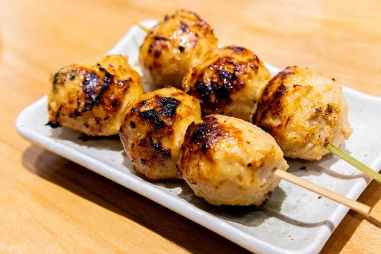
| 営業時間 | 月・火・木・金・土・日 18:00〜0:00 |
|---|---|
| 定休日 | 水曜 |
| 住所 | 長野県長野市鶴賀権堂町２２８４ |
| 予約 | 可 — ☎ 026-405-7757 ／ 公式サイト |
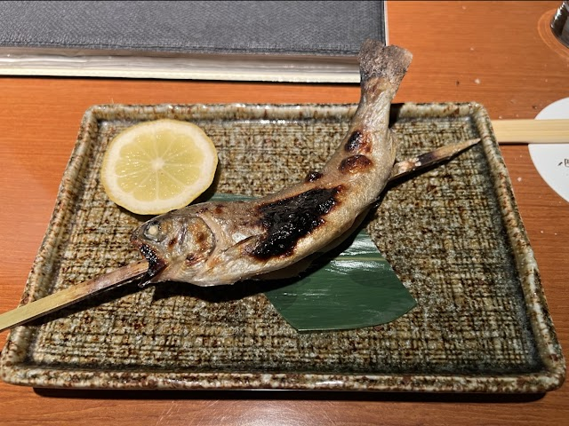
| 営業時間 | 月・火・水・木 17:00〜23:00 ／ 金・土・日 12:00〜23:00 |
|---|---|
| 定休日 | なし(要最終確認) |
| 住所 | 長野県長野市南長野末広町１３５８ |
| 予約 | 可 — ☎ 026-223-9494 ／ 公式サイト |
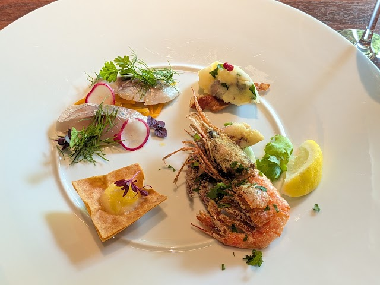
| 営業時間 | 月・火・水・木 11:00〜15:00, 17:30〜21:30 ／ 金 11:00〜15:00, 17:30〜22:00 ／ 土 17:30〜22:00 ／ 日 17:30〜21:30 |
|---|---|
| 定休日 | なし(要最終確認) |
| 住所 | 長野県長野市長野大門町８０ |
| 予約 | 可 — ☎ 026-232-1241 ／ 公式サイト |
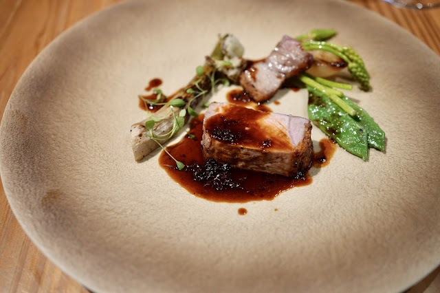
| 営業時間 | 火・水・木・金・土 12:00〜15:00, 18:30〜23:00 |
|---|---|
| 定休日 | 月・日曜 |
| 住所 | 長野県長野市長野東之門町３２８ |
| 予約 | 可 — ☎ 050-3623-4105 ／ 公式サイト |
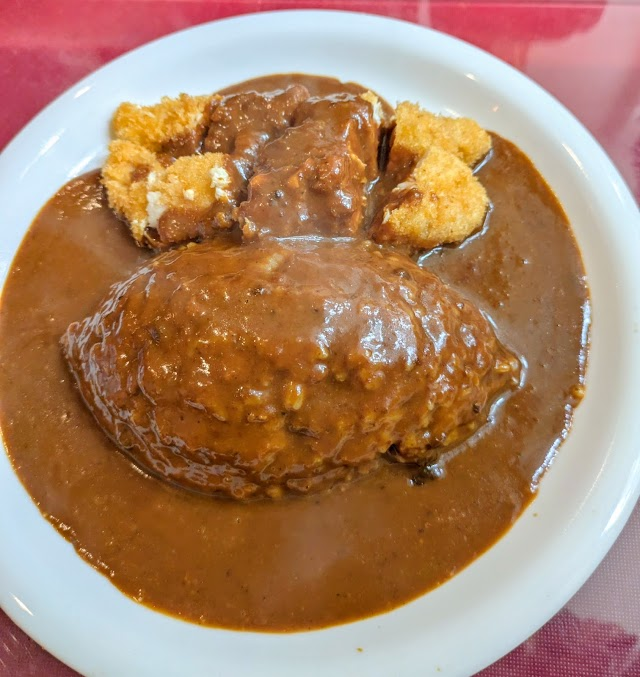
| 営業時間 | 月 11:30〜20:30 ／ 木・金・土・日 11:30〜14:00, 17:00〜20:30 |
|---|---|
| 定休日 | 火・水曜 |
| 住所 | 長野県長野市吉田２丁目３６−１３ プチレストランべんがる |
| 予約 | 可 — ☎ 026-241-7611 |
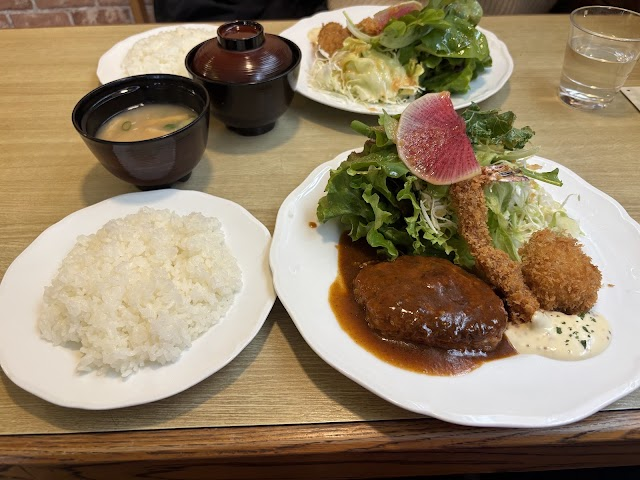
| 営業時間 | 月 11:00〜13:30 ／ 水・木・金・土・日 11:00〜13:30, 17:00〜20:00 |
|---|---|
| 定休日 | 火曜 |
| 住所 | 長野県長野市桐原１丁目３−３ |
| 予約 | 要確認 — ☎ 026-244-9037 |
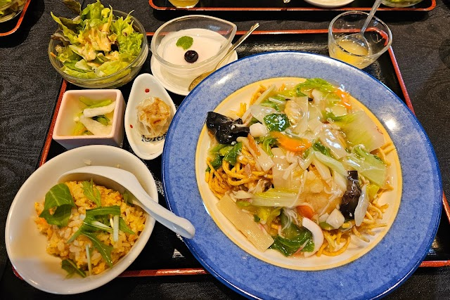
| 営業時間 | 月・水・金・土・日 11:30〜14:00, 17:30〜21:00 ／ 木 11:30〜14:00 |
|---|---|
| 定休日 | 火曜 |
| 住所 | 長野県長野市南長野南石堂町１３２３−１５ |
| 予約 | 可 — ☎ 026-223-2450 ／ 公式サイト |
| 営業時間 | 月・火・水・木・金・土 11:30〜15:00, 17:00〜23:00 ／ 日 11:30〜15:00 |
|---|---|
| 定休日 | なし(要最終確認) |
| 住所 | 長野県長野市南千歳１丁目１０−５ 第一荒井ビル 2階 |
| 予約 | 可 — ☎ 026-466-6595 ／ 公式サイト |
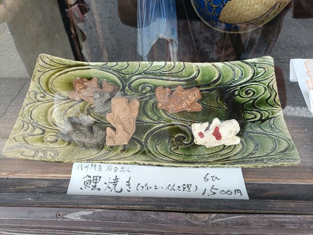
| 営業時間 | 月・火・金・土・日 7:00〜17:00 |
|---|---|
| 定休日 | 水・木曜 |
| 住所 | 長野県長野市長野東之門町４００−２ |
| 予約 | 要確認 — ☎ 026-219-2293 ／ 公式サイト |
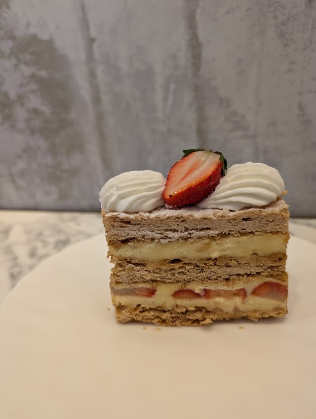
| 営業時間 | 月・火・金 11:00〜17:00 ／ 土・日 10:00〜17:00 |
|---|---|
| 定休日 | 水・木曜 |
| 住所 | 長野県長野市長野大門町５１５ |
| 予約 | 可 — ☎ 026-266-0156 ／ 公式サイト |
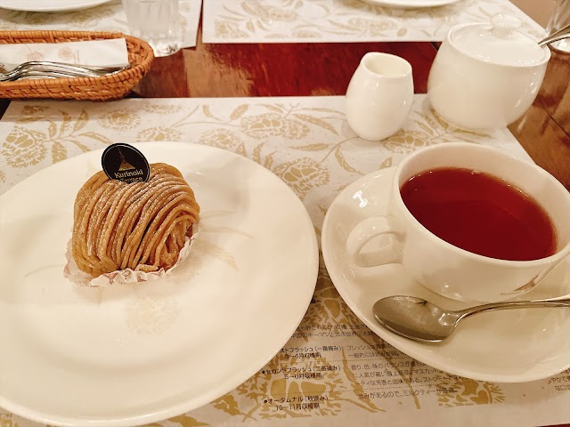
| 営業時間 | 月・火・木・金・土・日 10:00〜17:30 |
|---|---|
| 定休日 | 水曜 |
| 住所 | 長野県上高井郡小布施町小布施７８４ |
| 予約 | 要確認 — ☎ 026-247-5848 ／ 公式サイト |
本ガイドは個人利用目的で作成。掲載情報は2026年8月時点の調査に基づく。写真出典: Google Maps投稿写真(©各投稿者/Google)。